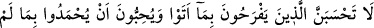
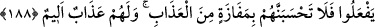

Hikâye edilir ki: Zülkarneyn, dünyayı terkeden; ölülerinin kabirlerini hemen
kapılarının önüne yapan; otla beslenen ve tâatla iştigal eden bir kavmin yanına uğramış.
Zülkarneyn, bunların reisine adam göndermiş, fakat reis: “Benim Zülkarneyn’le sohbet
etmeye ihtiyacım yok!” demiş. Bunu duyan Zülkarneyn adamın yanına gelmiş ve adama:
“Altın ve gümüşünüzün bu kadar az olmasının sebebi nedir?” demiş. Reis: “Dünya
kimsenin karnını doyurmadığı için hiçbirimiz dünyayı arzulamayız. Bu sebepledir ki
kabirlerimizi hemen yanıbaşımıza yaparız. Tâ ki ölümü hiç unutmayalım.” demiş ve
orada yatan bir insanın kafatası kemiğini alıp:
“Bu kemik, buranın hükümdarlarından birinin kafatasıdır. Bu hükümdar, tebaasına
zulmeder, dünya malı biriktirirdi. Derken, Allah Teâlâ bunun ruhunu kabzetti, o da
günahları ile başbaşa kaldı.” demiş. Sonra başka bir kafatası kemiği alıp:
“Bu da adâletli ve şefkatli bir hükümdarın kafatasıdır. Allah bunun da ruhunu
kabzetmiş; cennetine yerleştirmiş ve derecesini yükseltmiştir.” demiş.
Sonra elini, Zülkarneyn’in başına koymuş ve: “Senin başın, bu iki baştan hangisi gibi
olacak?” deyince Zülkarneyn ağlamış ve: “Benimle arkadaş olmayı arzularsan,
krallığımı seninle paylaşır, vezirlik görevini sana veririm.” demiş. Fakat reis:
“Heyhât!” demiş. Zülkarneyn: “Peki ama niçin?” deyince, “Çünkü” demiş “bütün
insanlar malın ve krallığın yüzünden senin düşmanların; kanâatim sâyesinde ise benim
dostlarımdır.”
Bal yemek iyidir, ama değmez arının sokmasına
Arıya sokulmaktan pekmezle yetinmek daha güzeldir.
Gönlü bağsız, hür olan fakir,
Kanaatsiz padişahtan daha iyidir.
Kişi ister padişah olsun, ister eskici
Uyuduklarında aralarında bir fark kalmaz sahici.
188. Sanma ki ettiklerine sevinen, yapmadıkları ile övülmek isteyenler, evet,
sanma ki onlar azaptan kurtulacaklardır. Onlar için elem verici bir azap vardır.
Ey Muhammed! “O ettiklerine”, yani gerçeği gizleyip karıştırmalarına sevinen;
verdikleri sözü yerine getirmek; gerçeği ortaya koymak ve doğruyu bildirmek gibi,
yapmadıkları şeylerle övülmeyi isteyenlerin azaptan kurtulacaklarını sanma. Bu hitap,
kendisine hitap edilebilecek herkese yöneltilmiş de kabul edilebilir.
Bu inkâr ve karıştırmaları yüzünden onlar için acı bir azap vardır.